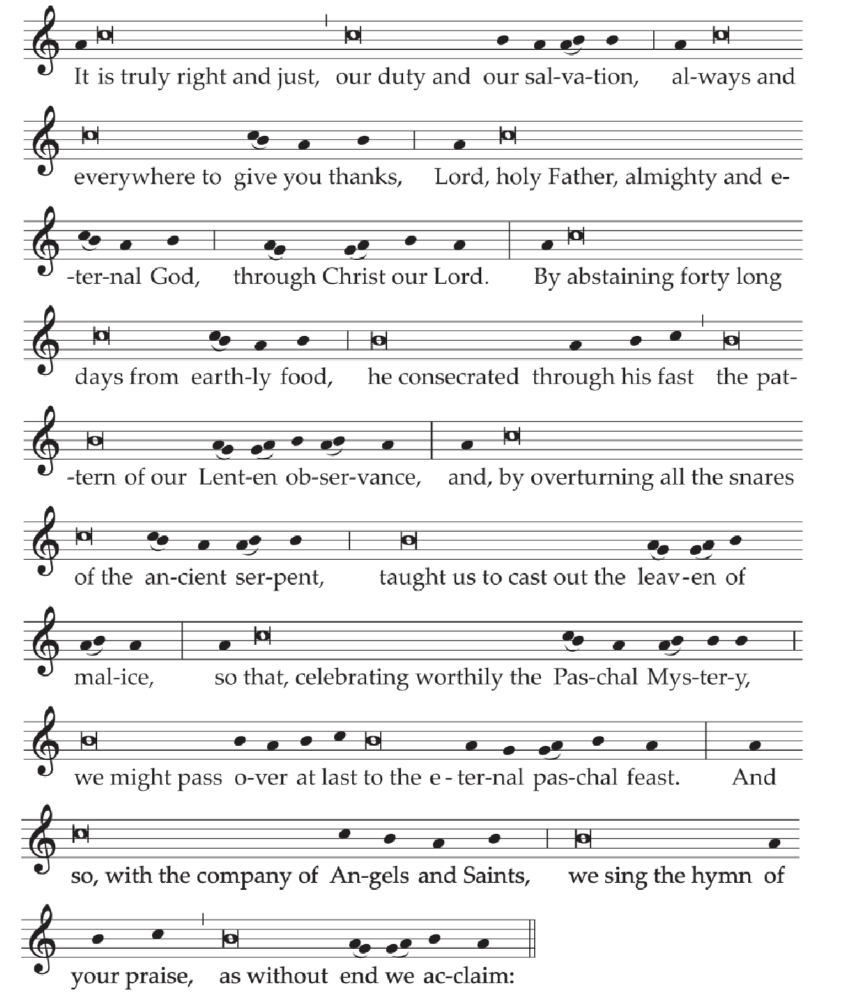
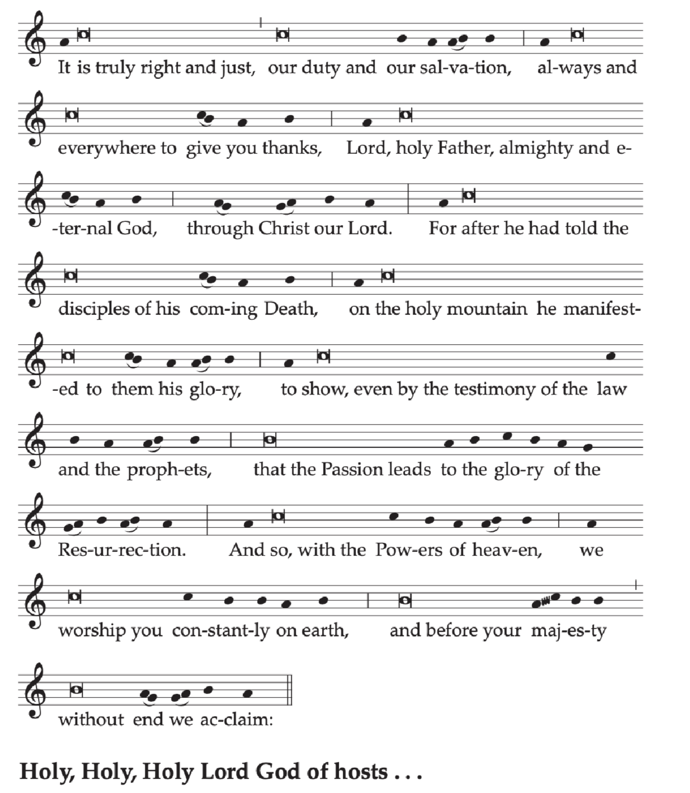
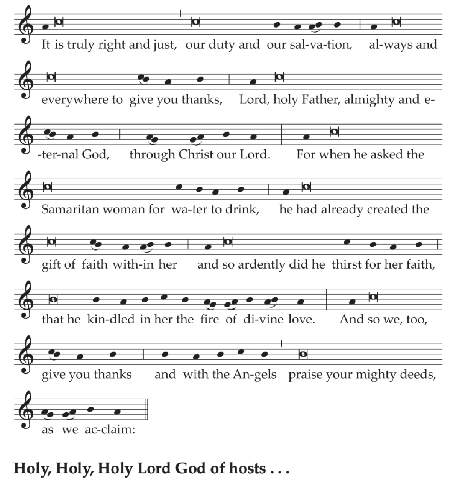
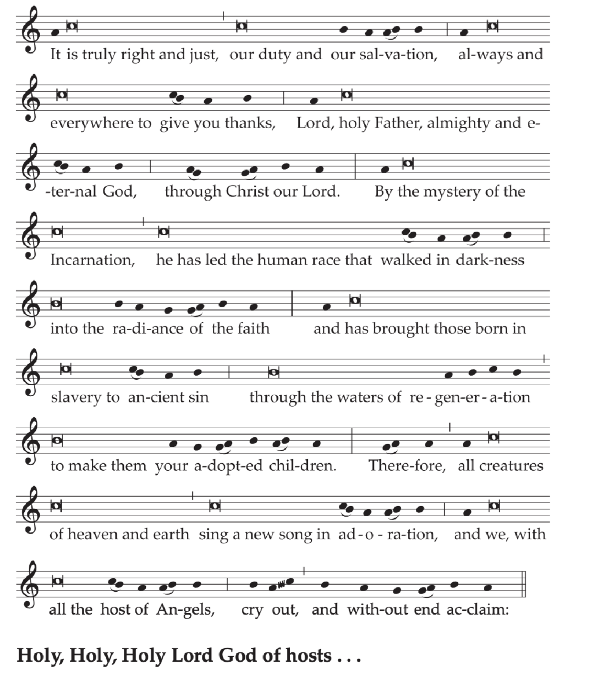
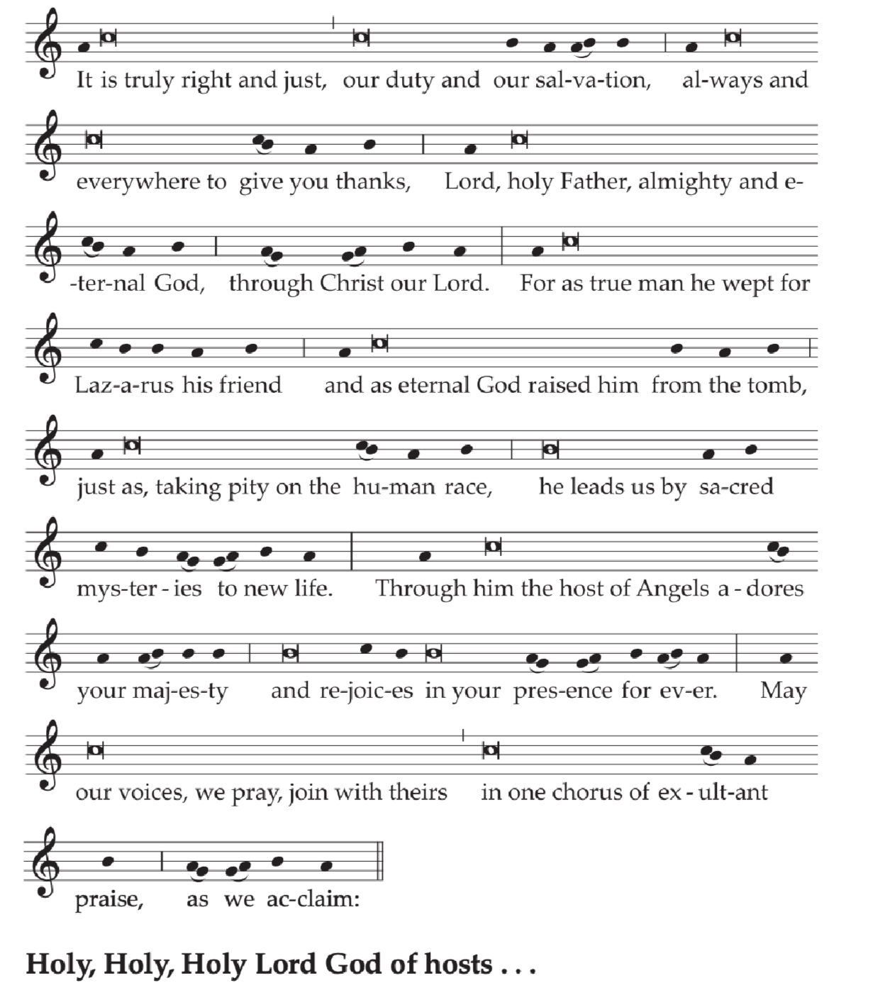

Home
Liturgy
Roman Missal
Proper of Time
ASH WEDNESDAY
In the course of today's Mass, ashes are blessed and distributed. These are made from the olive branches or branches of other trees that were blessed the previous year.
INTRODUCTORY RITES AND LITURGY OF THE WORD
Entrance AntiphonWis 11:24, 25, 27
You are merciful to all, O Lord,
and despise nothing that you have made.
You overlook peeople's sins, to bring them to repentance,
and you spare them, for you are the Lord our God.
The Penitential Act is omitted, and the Distribution of Ashes takes its place.
BLESSING AND DISTRIBUTION OF ASHES
After the Homily, the Priest, standing with hands joined, says:
Dear brethren (brothers and sisters), let us humbly ask God our Father
that he be pleased to bless with the abundance of his grace
these ashes, which we will put on our heads in penitence.
After a brief prayer in silence, and, with hands extended, he continues:
O God, who are moved by acts of humility
and respond with forgiveness to works of penance,
lend your merciful ear to our prayers
and in your kindness pour out the grace of your ✠
blessing
on your servants who are marked with these ashes,
that, as they follow the Lenten observances,
they may be worthy to come with minds made pure
to celebrate the Paschal Mystery of your Son.
Through Christ our Lord.
R. Amen
Or:
O God, who desire not the death of sinners,
but their conversion,
mercifully hear our prayers
and in your kindness be pleased to bless ✠ these ashes,
which we intend to receive upon our heads,
that we, who acknowledge we are but ashes
and shall return to dust,
may, through a steadfast observance of Lent,
gain pardon for sins and newness of life
after the likeness of your Risen Son.
Who lives and reigns for ever and ever.
R. Amen
He sprinkles the ashes with holy water, without saying anything.
Then the Priest places ashes on the head of all those present who come to him, and says to each one:
Repent, and believe in the Gospel.
Or:
Remember that you are dust, and to dust you shall return.
Meanwhile, the following are sung:
Antiphon 1
Let us change our garments to sackcloth and ashes,
let us fast and weep before the Lord,
that our God, rich in mercy, might forgive us our sins.
Antiphon 2 Cf. Jl 2:17; Est 4:17
Let the priests, the ministers of the Lord,
stand between the porch and the altar and weep and cry out:
Spare, O Lord, spare your people;
do not close the mouths of those who sing your praise, O Lord.
Antiphon 3 Ps 51 (50):3
Blot out my transgressions, O Lord.
This may be repeated after each verse of Psalm 51 (50) (Have mercy on me, O God).
Responsory Cf. Bar 3:2; Ps 79 (78):9
|
R. |
Let us correct our faults which we have committed in ignorance, let us not be taken unawares by the day of our death, looking in vain for leisure to repent. * Hear us, O Lord, and show us your mercy, for we have sinned against you. |
|
V. |
Help us, O God our Savior; for the sake of your name, O Lord, set us free. * Hear us, O Lord . . . |
Another appropriate chant may also be sung.
After the distribution of ashes, the Priest washes his hands and proceeds to the Universal Prayer, and continues the Mass in the usual way.
The Creed is not said.
THE LITURGY OF THE EUCHARIST
Prayer over the Offerings
As we solemnly offer
the annual sacrifice for the beginning of Lent,
we entreat you, O Lord,
that, through works of penance and charity,
we may turn away from harmful pleasures
and, cleansed from our sins, may become worthy
to celebrate devoutly the Passion of your Son.
Who lives and reigns for ever and ever.
Communion AntiphonPs 1:2-3
He who ponders the law of the Lord day and night
will yield fruit in due season.
Prayer after Communion
May the Sacrament we have received sustain us, O Lord,
that our Lenten fast may be pleasing to you
and be for us a healing remedy.
Through Christ our Lord.
Prayer over the People
For the dismissal, the Priest stands facing the people and, extending his hands over them, says this prayer:
Pour out a spirit of compunction, O God,
on those who bow before your majesty,
and by your mercy may they merit the rewards you promise
to those who do penance.
Through Christ our Lord.
The blessing and distribution of ashes may also take place outside Mass. In this case, the rite is preceded by a Liturgy of the Word, with the Entrance Antiphon, the Collect, and the readings with their chants as at Mass. Then there follow the Homily and the blessing and distribution of ashes. The rite is concluded with the Universal Prayer, the Blessing, and the Dismissal of the Faithful.
Thursday after Ash Wednesday
Entrance AntiphonCf. Ps 55 (54):17-20, 23
When I cried to the Lord, he heard my voice;
he rescued me from those who attack me.
Entrust your cares to the Lord, and he will support you.
Collect
Prompt our actions with your inspiration, we pray, O Lord,
and further them with your constant help,
that all we do may always begin from you
and by you be brought to completion.
Through our Lord Jesus Christ, your Son,
who lives and reigns with you in the unity of the Holy Spirit,
God, for ever and ever.
Prayer over the Offerings
Regard with favor, O Lord, we pray,
the offerings we set upon this sacred altar,
that, bestowing on us your pardon,
our oblations may give honor to your name.
Through Christ our Lord.
Communion AntiphonCf. Ps 51 (50):12
Create a pure heart for me, O God;
renew a steadfast spirit within me.
Prayer after Communion
Having received the blessing of your heavenly gifts,
we humbly beseech you, almighty God,
that they may always be for us
a source both of pardon and of salvation.
Through Christ our Lord.
Prayer over the People for optional use
Almighty God,
who have made known to your people
the ways of eternal life,
lead them by that path, we pray,
to you, the unfading light.
Through Christ our Lord.
Friday after Ash Wednesday
Entrance AntiphonPs 30(29): 11
The Lord heard and had mercy on me;
the Lord became my helper.
Collect
Show gracious favor, O Lord, we pray,
to the works of penance we have begun,
that we may have strength to accomplish with sincerity
the bodily observances we undertake.
Through our Lord Jesus Christ, your Son,
who lives and reigns with you in the unity of the Holy Spirit,
God, for ever and ever.
Prayer over the Offerings
We offer, O Lord, the sacrifice of our Lenten observance,
praying that it may make our intentions acceptable to you
and add to our powers of self-restraint.
Through Christ our Lord.
Communion AntiphonPs 25(24): 4
O Lord, make me know your ways,
teach me your paths.
Prayer after Communion
We pray, almighty God,
that, through partaking of this mystery,
we may be cleansed of all our misdeeds,
and so be suited for the remedies of your compassion.
Through Christ our Lord.
Prayer over the People for optional use
For your mighty deeds, O God of mercy,
may your people offer endless thanks,
and, by observing the age-old disciplines
along their pilgrim journey,
may they merit to come and behold you for ever.
Through Christ our Lord.
Saturday after Ash Wednesday
Entrance AntiphonCf. Ps 69(68): 17
Answer us, Lord, for your mercy is kind;
in the abundance of your mercies, look upon us.
Collect
Almighty ever-living God,
look with compassion on our weakness
and ensure us your protection
by stretching forth the right hand of your majesty.
Through our Lord Jesus Christ, your Son,
who lives and reigns with you in the unity of the Holy Spirit,
God, for ever and ever.
Prayer over the Offerings
Accept, we pray, O Lord,
the sacrifice of conciliation and praise,
and grant that, cleansed by its working,
we may offer minds well pleasing to you.
Through Christ our Lord.
Communion AntiphonMt 9: 13
I desire mercy, not sacrifice, says the Lord,
for I did not come to call the just but sinners.
Prayer after Communion
Nourished with the gift of heavenly life,
we pray, O Lord,
that what remains for us a mystery in this present life
may be for us a help to reach eternity.
Through Christ our Lord.
Prayer over the People for optional use
Abide graciously, O Lord, with your people,
who have touched the sacred mysteries,
that no dangers may bring affliction
to those who trust in you, their protector.
Through Christ our Lord.
FIRST SUNDAY OF LENT
On this Sunday is celebrated the rite of "election" or "enrollment of names" for the catechumens who are to be admitted to the Sacraments of Christian Initiation at the Easter Vigil, using the proper prayers and intercessions as given here.
Entrance AntiphonCf. Ps 91 (90): 15-16
When he calls on me, I will answer him;
I will deliver him and give him glory,
I will grant him length of days.
The Gloria in excelsis (Glory to God in the highest) is not said.
Collect
Grant, almighty God,
through the yearly observances of holy Lent,
that we may grow in understanding
of the riches hidden in Christ
and by worthy conduct pursue their effects.
Through our Lord Jesus Christ, your Son,
who lives and reigns with you in the unity of the Holy Spirit,
God, for ever and ever.
The Creed is said.
Prayer over the Offerings
Give us the right dispositions, O Lord, we pray,
to make these offerings,
for with them we celebrate the beginning
of this venerable and sacred time.
Through Christ our Lord.
Preface: The Temptation of the Lord.


Text without music:
V. The Lord be with you.
R. And with your spirit.
V. Lift up your hearts.
R. We lift them up to the Lord.
V. Let us give thanks to the Lord our God.
R. It is right and just.
It is truly right and just, our duty and our salvation,
always and everywhere to give you thanks,
Lord, holy Father, almighty and eternal God,
through Christ our Lord.
By abstaining forty long days from earthly food,
he consecrated through his fast
the pattern of our Lenten observance
and, by overturning all the snares of the ancient serpent,
taught us to cast out the leaven of malice,
so that, celebrating worthily the Paschal Mystery,
we might pass over at last to the eternal paschal feast.
And so, with the company of Angels and Saints,
we sing the hymn of your praise,
as without end we acclaim:
Holy, Holy, Holy Lord God of hosts...
Communion Antiphon
One does not live by bread alone,Mt 4:4
but by every word that comes forth from the mouth of God.
Or:
The Lord will conceal you with his pinions,Cf. Ps 91 (90):4
and under his wings you will trust.
Prayer after Communion
Renewed now with heavenly bread,
by which faith is nourished, hope increased,
and charity strengthened,
we pray, O Lord,
that we may learn to hunger for Christ,
the true and living Bread,
and strive to live by every word
which proceeds from your mouth.
Through Christ our Lord.
Prayer over the People
May bountiful blessing, O Lord, we pray,
come down upon your people,
that hope may grow in tribulation,
virtue be strengthened in temptation,
and eternal redemption be assured.
Through Christ our Lord.
Monday of the First Week of Lent
Entrance AntiphonCf. Ps 123 (122): 2-3
Like the eyes of slaves on the hand of their lords,
so our eyes are on the Lord our God, till he show us his mercy.
Have mercy on us, Lord, have mercy.
Collect
Convert us, O God our Savior,
and instruct our minds by heavenly teaching,
that we may benefit from the works of Lent.
Through our Lord Jesus Christ, your Son,
who lives and reigns with you in the unity of the Holy Spirit,
God, for ever and ever.
Prayer over the Offerings
May this devout oblation be acceptable to you, O Lord,
that by your power it may sanctify our manner of life
and gain for us your conciliation and pardon.
Through Christ our Lord.
Communion AntiphonMt 25: 40, 34
Amen, I say to you:
Whatever you did for one of the least of my brethren,
you did it for me, says the Lord.
Come, you blessed of my Father,
receive the kingdom prepared for you from the foundation of the world.
Prayer after Communion
We pray, O Lord, that, in receiving your Sacrament,
we may experience help in mind and body
so that, kept safe in both,
we may glory in the fullness of heavenly healing.
Through Christ our Lord.
Prayer over the People for optional use
Enlighten the minds of your people, Lord, we pray,
with the light of your glory,
that they may see what must be done
and have the strength to do what is right.
Through Christ our Lord.
Tuesday of the First Week of Lent
Entrance AntiphonCf. Ps 90(89): 1-2
O Lord, you have been our refuge, from generation to generation;
from age to age, you are.
Collect
Look upon your family, Lord,
that, through the chastening effects of bodily discipline,
our minds may be radiant in your presence
with the strength of our yearning for you.
Through our Lord Jesus Christ, your Son,
who lives and reigns with you in the unity of the Holy Spirit,
God, for ever and ever.
Prayer over the Offerings
Receive, O Creator, almighty God,
what we bring from your bountiful goodness,
and be pleased to transform
this temporal sustenance you have given us,
that it may bring us eternal life.
Through Christ our Lord.
Communion AntiphonCf. Ps 4: 2
When I called, the God of justice gave me answer;
from anguish you released me;
have mercy, O Lord, and hear my prayer!
Prayer after Communion
AFTERLINE1
Grant us through these mysteries, Lord,
that by moderating earthly desires
we may learn to love the things of heaven.
Through Christ our Lord.
Prayer over the People for optional use
May your faithful be strengthened, O God, by your blessing:
in grief, may you be their consolation,
and in peril, their protection.
Through Christ our Lord.
Wednesday of the First Week of Lent
Entrance AntiphonCf. Ps 25(24): 6, 2, 22
Remember your compassion, O Lord,
and your merciful love, for they are from of old.
Let not our enemies exult over us.
Redeem us, O God of Israel, from all our distress.
Collect
Look kindly, Lord, we pray,
on the devotion of your people,
that those who by self-denial are restrained in body
may by the fruit of good works be renewed in mind.
Through our Lord Jesus Christ, your Son,
who lives and reigns with you in the unity of the Holy Spirit,
God, for ever and ever.
Prayer over the Offerings
We offer to you, O Lord,
what you have given to be dedicated to your name,
that, just as for our benefit you make these gifts a Sacrament,
so you may let them become for us an eternal remedy.
Through Christ our Lord.
Communion AntiphonCf. Ps 5: 12
All who take refuge in you shall be glad, O Lord,
and ever cry out their joy, and you shall dwell among them.
Prayer after Communion
O God, who never cease to nourish us by your Sacrament,
grant that the refreshment you give us through it
may bring us unending life.
Through Christ our Lord.
Prayer over the People for optional use
Watch over your people, Lord,
and in your kindness cleanse them from all sins,
for if evil has no dominion over them,
no trial can do them harm.
Through Christ our Lord.
Thursday of the First Week of Lent
Entrance AntiphonCf. Ps 5: 2-3
To my words give ear, O Lord; give heed to my sighs.
Attend to the sound of my cry, my King and my God.
Collect
Bestow on us, we pray, O Lord,
a spirit of always pondering on what is right
and of hastening to carry it out,
and, since without you we cannot exist,
may we be enabled to live according to your will.
Through our Lord Jesus Christ, your Son,
who lives and reigns with you in the unity of the Holy Spirit,
God, for ever and ever.
Prayer over the Offerings
Be merciful, O Lord, to those who approach you in supplication,
and, accepting the oblations and prayers of your people,
turn the hearts of us all towards you.
Through Christ our Lord.
Communion AntiphonMt 7: 8
Everyone who asks, receives; and the one who seeks, finds;
and to the one who knocks, the door will be opened.
Prayer after Communion
We pray, O Lord our God,
that, as you have given these most sacred mysteries
to be the safeguard of our salvation,
so you may make them a healing remedy for us,
both now and in time to come.
Through Christ our Lord.
Prayer over the People for optional use
May the mercy they have hoped for, O Lord,
come to those who make supplication to you,
and may the riches of heaven be given them,
that they may know what it is right to ask
and receive what they have sought.
Through Christ our Lord.
Friday of the First Week of Lent
Entrance AntiphonCf. Ps 25 (24): 17-18
Set me free from my distress, O Lord.
See my lowliness and suffering,
and take away all my sins.
Collect
Grant that your faithful, O Lord, we pray,
may be so conformed to the paschal observances,
that the bodily discipline now solemnly begun
may bear fruit in the souls of all.
Through our Lord Jesus Christ, your Son,
who lives and reigns with you in the unity of the Holy Spirit,
God, for ever and ever.
Prayer over the Offerings
Accept the sacrificial offerings, O Lord,
by which, in your power and kindness,
you willed us to be reconciled to yourself
and our salvation to be restored.
Through Christ our Lord.
Communion AntiphonEz 33: 11
As I live, says the Lord, I do not desire the death of the sinner,
but rather that he turn back and live.
Prayer after Communion
May the holy refreshment of your Sacrament
restore us anew, O Lord,
and, cleansing us of old ways,
take us up into the mystery of salvation.
Through Christ our Lord.
Prayer over the People for optional use
Look with favor on your people, O Lord,
that what their observance outwardly declares
it may inwardly bring about.
Through Christ our Lord.
Saturday of the First Week of Lent
Entrance AntiphonCf. Ps 19 (18): 8
The law of the Lord is perfect; it revives the soul.
The decrees of the Lord are steadfast; they give wisdom to the simple.
Collect
Turn our hearts to you, eternal Father,
and grant that, seeking always the one thing necessary
and carrying out works of charity,
we may be dedicated to your worship.
Through our Lord Jesus Christ, your Son,
who lives and reigns with you in the unity of the Holy Spirit,
God, for ever and ever.
Prayer over the Offerings
May these blessed mysteries
by which we are restored, O Lord, we pray,
make us worthy of the gift they bestow.
Through Christ our Lord.
Communion AntiphonMt 5: 48
Be perfect, as your heavenly Father is perfect, says the Lord.
Prayer after Communion
Show unceasing favor, O Lord,
to those you refresh with this divine mystery,
and accompany with salutary consolations
those you have imbued with heavenly teaching.
Through Christ our Lord.
Prayer over the People for optional use
May the blessing for which they have longed
strengthen your faithful, O Lord,
so that, never straying from your will,
they may always rejoice in your benefits.
Through Christ our Lord.
SECOND SUNDAY OF LENT
Entrance Antiphon
Of you my heart has spoken, Seek his face.Cf. Ps 27 (26): 8-9
It is your face, O Lord, that I seek;
hide not your face from me.
Or:
Remember your compassion, O Lord,Cf. Ps 25 (24): 6, 2, 22
and your merciful love, for they are from of old.
Let not our enemies exult over us.
Redeem us, O God of Israel, from all our distress.
The Gloria in excelsis (Glory to God in the highest) is not said.
Collect
O God, who have commanded us
to listen to your beloved Son,
be pleased, we pray,
to nourish us inwardly by your word,
that, with spiritual sight made pure,
we may rejoice to behold your glory.
Through our Lord Jesus Christ, your Son,
who lives and reigns with you in the unity of the Holy Spirit,
God, for ever and ever.
The Creed is said.
Prayer over the Offerings
May this sacrifice, O Lord, we pray,
cleanse us of our faults
and sanctify your faithful in body and mind
for the celebration of the paschal festivities.
Through Christ our Lord.
Preface: The Transfiguration of the Lord.

Text without music:
V. The Lord be with you.
R. And with your spirit.
V. Lift up your hearts.
R. We lift them up to the Lord.
V. Let us give thanks to the Lord our God.
R. It is right and just.
It is truly right and just, our duty and our salvation,
always and everywhere to give you thanks,
Lord, holy Father, almighty and eternal God,
through Christ our Lord.
For after he had told the disciples of his coming Death,
on the holy mountain he manifested to them his glory,
to show, even by the testimony of the law and the prophets,
that the Passion leads to the glory of the Resurrection.
And so, with the Powers of heaven,
we worship you constantly on earth,
and before your majesty
without end we acclaim:
Holy, Holy, Holy Lord God of hosts...
Communion AntiphonMt 17: 5
This is my beloved Son, with whom I am well pleased;
listen to him.
Prayer after Communion
As we receive these glorious mysteries,
we make thanksgiving to you, O Lord,
for allowing us while still on earth
to be partakers even now of the things of heaven.
Through Christ our Lord.
Prayer over the People
Bless your faithful, we pray, O Lord,
with a blessing that endures for ever,
and keep them faithful
to the Gospel of your Only Begotten Son,
so that they may always desire and at last attain
that glory whose beauty he showed in his own Body,
to the amazement of his Apostles.
Through Christ our Lord.
Monday of the Second Week of Lent
Entrance AntiphonCf. Ps 26 (25): 11-12
Redeem me, O Lord, and have mercy on me.
My foot stands on level ground;
I will bless the Lord in the assembly.
Collect
O God, who have taught us
to chasten our bodies
for the healing of our souls,
enable us, we pray,
to abstain from all sins,
and strengthen our hearts
to carry out your loving commands.
Through our Lord Jesus Christ, your Son,
who lives and reigns with you in the unity of the Holy Spirit,
God, for ever and ever.
Prayer over the Offerings
Accept in your goodness these our prayers, O Lord,
and set free from worldly attractions
those you allow to serve the heavenly mysteries.
Through Christ our Lord.
Communion AntiphonLk 6: 36
Be merciful, as your Father is merciful, says the Lord.
Prayer after Communion
May this Communion, O Lord,
cleanse us of wrongdoing
and make us heirs to the joy of heaven.
Through Christ our Lord.
Prayer over the People for optional use
Confirm the hearts of your faithful, O Lord, we pray,
and strengthen them by the power of your grace,
that they may be constant in making supplication to you
and sincere in love for one another.
Through Christ our Lord.
Tuesday of the Second Week of Lent
Entrance AntiphonCf. Ps 13 (12): 4-5
Give light to my eyes lest I fall asleep in death,
lest my enemy say: I have overcome him.
Collect
Guard your Church, we pray, O Lord, in your unceasing mercy,
and, since without you mortal humanity is sure to fall,
may we be kept by your constant helps from all harm
and directed to all that brings salvation.
Through our Lord Jesus Christ, your Son,
who lives and reigns with you in the unity of the Holy Spirit,
God, for ever and ever.
Prayer over the Offerings
Be pleased to work your sanctification within us
by means of these mysteries, O Lord,
and by it may we be cleansed of earthly faults
and led to the gifts of heaven.
Through Christ our Lord.
Communion AntiphonPs 9: 2-3
I will recount all your wonders.
I will rejoice in you and be glad,
and sing psalms to your name, O Most High.
Prayer after Communion
May the refreshment of this sacred table,
O Lord, we pray,
bring us an increase in devoutness of life
and the constant help of your work of conciliation.
Through Christ our Lord.
Prayer over the People for optional use
Graciously hear the cries of your faithful, O Lord,
and relieve the weariness of their souls,
that, having received your forgiveness,
they may ever rejoice in your blessing.
Through Christ our Lord.
Wednesday of the Second Week of Lent
Entrance AntiphonCf. Ps 38 (37): 22-23
Forsake me not, O Lord! My God, be not far from me!
Make haste and come to my help, O Lord, my strong salvation!
Collect
Keep your family, O Lord,
schooled always in good works,
and so comfort them with your protection here
as to lead them graciously to gifts on high.
Through our Lord Jesus Christ, your Son,
who lives and reigns with you in the unity of the Holy Spirit,
God, for ever and ever.
Prayer over the Offerings
Look with favor, Lord,
on the sacrificial gifts we offer you,
and by this holy exchange
undo the bonds of our sins.
Through Christ our Lord.
Communion AntiphonMt 20: 28
The Son of Man did not come to be served but to serve,
and to give his life as a ransom for many.
Prayer after Communion
Grant, we pray, O Lord our God,
that what you have given us as the pledge of immortality
may work for our eternal salvation.
Through Christ our Lord.
Prayer over the People for optional use
Bestow upon your servants, Lord,
abundance of grace and protection;
grant health of mind and body;
grant fullness of fraternal charity,
and make them always devoted to you.
Through Christ our Lord.
Thursday of the Second Week of Lent
Entrance AntiphonCf. Ps 139 (138): 23-24
Test me, O God, and know my thoughts.
See that my path is not wicked,
and lead me in the way everlasting.
Collect
O God, who delight in innocence and restore it,
direct the hearts of your servants to yourself,
that, caught up in the fire of your Spirit,
we may be found steadfast in faith
and effective in works.
Through our Lord Jesus Christ, your Son,
who lives and reigns with you in the unity of the Holy Spirit,
God, for ever and ever.
Prayer over the Offerings
By this present sacrifice, we pray, O Lord,
sanctify our observance,
that what Lenten discipline outwardly declares
it may inwardly bring about.
Through Christ our Lord.
Communion AntiphonPs 119 (118): 1
Blessed are those whose way is blameless,
who walk in the law of the Lord.
Prayer after Communion
May this sacrifice, O God,
remain active in its effects
and work ever more strongly within us.
Through Christ our Lord.
Prayer over the People for optional use
Abide with your servants, O Lord,
who implore the help of your grace,
that they may receive from you
the support and guidance of your protection.
Through Christ our Lord.
Friday of the Second Week of Lent
Entrance AntiphonCf. Ps 31 (30):2, 5
In you, O Lord, I put my trust, let me never be put to shame;
release me from the snare they have hidden for me,
for you indeed are my refuge.
The Gloria in excelsis (Glory to God in the highest) is not said.
Collect
Grant, we pray, almighty God,
that, purifying us by the sacred practice of penance,
you may lead us in sincerity of heart
to attain the holy things to come.
Through our Lord Jesus Christ, your Son,
who lives and reigns with you in the unity of the Holy Spirit,
God, for ever and ever.
Prayer over the Offerings
May your merciful grace prepare your servants, O God,
for the worthy celebration of these mysteries,
and lead them to it by a devout way of life.
Through Christ our Lord.
Communion Antiphon1 Jn 4:10
God loved us, and sent his Son
as expiation for our sins.
Prayer after Communion
Having received this pledge of eternal salvation,
we pray, O Lord,
that we may set our course so well
as to attain the redemption you promise.
Through Christ our Lord.
Prayer over the People for optional use
Grant you people, O Lord, we pray,
health of mind and body,
that by constancy in good deeds
they may always merit the defense of your protection.
Through Christ our Lord.
Saturday of the Second Week of Lent
Entrance AntiphonPs 145 (144):8-9
The Lord is kind and full of compassion, slow to anger, abounding in mercy.
How good is the Lord to all, compassionate to all his creatures.
Collect
O God, who grant us by glorious healing remedies while still on earth
to be partakers of the things of heaven,
guide us, we pray, through this present life
and bring us to that light in which you dwell.
Through our Lord Jesus Christ, your Son,
who lives and reigns with you in the unity of the Holy Spirit,
God, for ever and ever.
Prayer over the Offerings
Through these sacred gifts, we pray, O Lord,
may our redemption yield its fruits,
restraining us from unruly desires
and leading us onward to the gifts of salvation.
Through Christ our Lord.
Communion AntiphonLk 15:32
You must rejoice, my son,
for your brother was dead and has come to life;
he was lost and is found.
Prayer after Communion
May your divine Sacrament, O Lord, which we have received,
fill the inner depths of our heart
and, by its working mightily within us,
make us partakers of its grace.
Through Christ our Lord.
Prayer over the People for optional use
May the ears of your mercy be open, O Lord,
to the prayers of those who call upon you;
and that you may grant what they desire,
have them ask what is pleasing to you.
Through Christ our Lord.
THIRD SUNDAY OF LENT
On this Sunday is celebrated the first scrutiny in preparation for the Baptism of the catechumens who are to be admitted to the Sacraments of Christian Initiation at the Easter Vigil, using the proper prayers and intercessions as given here.
Entrance AntiphonCf. Ps 25 (24):15-16
My eyes are always on the Lord,
for he rescues my feet from the snare.
Turn to me and have mercy on me,
for I am alone and poor.
Or: Cf. Ez 36:23-26
When I prove my holiness among you,
I will gather you from all the foreign lands;
and I will pour clean water upon you
and cleanse you from all your impurities,
and I will give you a new spirit, says the Lord.
The Gloria in excelsis (Glory to God in the highest) is not said.
Collect
O God, author of every mercy and of all goodness,
who in fasting, prayer and almsgiving
have shown us a remedy for sin,
look graciously on this confession of our lowliness,
that we, who are bowed down by our conscience,
may always be lifted up by your mercy.
Through our Lord Jesus Christ, your Son,
who lives and reigns with you in the unity of the Holy Spirit,
God, for ever and ever.
The Creed is said.
Prayer over the Offerings
Be pleased, O Lord, with these sacrificial offerings,
and grant that we who beseech pardon for our own sins,
may take care to forgive our neighbor.
Through Christ our Lord.
When the Gospel of the Samaritan Woman is not read, Preface I or II of Lent is used.
Preface: The Samaritan Woman.

Text without music:
V. The Lord be with you.
R. And with your spirit.
V. Lift up your hearts.
R. We lift them up to the Lord.
V. Let us give thanks to the Lord our God.
R. It is right and just.
It is truly right and just, our duty and our salvation,
always and everywhere to give you thanks,
Lord, holy Father, almighty and eternal God,
through Christ our Lord.
For when he asked the Samaritan woman for water to drink,
he had already created the gift of faith within her
and so ardently did he thirst for her faith,
that he kindled in her the fire of divine love.
And so we, too, give you thanks
and with the Angels
praise your mighty deeds, as we acclaim:
Holy, Holy, Holy Lord God of hosts...
Communion Antiphon
When the Gospel of the Samaritan Woman is read: Jn 4:13-14
For anyone who drinks it, says the Lord,
the water I shall give will become in him
a spring welling up to eternal life.
When another Gospel is read: Cf. Ps 84 (83):4-5
The sparrow finds a home,
and the swallow a nest for her young:
by your altars, O Lord of hosts, my King and my God.
Blessed are they who dwell in your house,
for ever singing your praise.
Prayer after Communion
As we receive the pledge
of things yet hidden in heaven
and are nourished while still on earth
with the Bread that comes from on high,
we humbly entreat you, O Lord,
that what is being brought about in us in mystery
may come to true completion.
Through Christ our Lord.
Prayer over the People
Direct, O Lord, we pray, the hearts of your faithful,
and in your kindness grant your servants this grace:
that, abiding in the love of you and their neighbor,
they may fulfill the whole of your commands.
Through Christ our Lord.
Monday of the Third Week of Lent
Entrance AntiphonPs 84 (83):3
My soul is longing and yearning for the courts of the Lord.
My heart and my flesh cry out to the living God.
Collect
May your unfailing compassion, O Lord,
cleanse and protect your Church,
and, since without you she cannot stand secure,
may she be always governed by your grace.
Through our Lord Jesus Christ, your Son,
who lives and reigns with you in the unity of the Holy Spirit,
God, for ever and ever.
Prayer over the Offerings
May what we offer you, O Lord,
in token of our service,
be transformed by you into the sacrament of salvation.
Through Christ our Lord.
Communion AntiphonPs 117 (116):1, 2
O praise the Lord, all you nations,
for his merciful love towards us is great.
Prayer after Communion
May communion in this your Sacrament,
we pray, O Lord,
bring with it purification and the unity that is your gift.
Through Christ our Lord.
Prayer over the People for optional use
May your right hand, we ask, O Lord,
protect this people that makes entreaty to you:
graciously purify them and give them instruction,
that, finding solace in this life,
they may reach the good things to come.
Through Christ our Lord.
Tuesday of the Third Week of Lent
Entrance AntiphonCf. Ps 17 (16): 6,8
To you I call, for you will surely heed me, O God;
turn your ear to me; hear my words.
Guard me as the apple of your eye;
in the shadow of your wings protect me.
Collect
May your grace not forsake us, O Lord, we pray,
but make us dedicated to your holy service
and at all times obtain for us your help.
Through our Lord Jesus Christ, your Son,
who lives and reigns with you in the unity of the Holy Spirit,
God, for ever and ever.
Prayer over the Offerings
OFFERINGSLINE1
Grant us, O Lord, we pray,
that this saving sacrifice
may cleanse us of our faults
and become an oblation
pleasing to your almighty power.
Through Christ our Lord.
Communion AntiphonCf. Ps 15 (14):1-2
Lord, who may abide in your tent,
and dwell on your holy mountain?
Whoever walks without fault and does what is just.
Prayer after Communion
May the holy partaking of this mystery
give us life, O Lord, we pray,
and grant us both pardon and protection.
Through Christ our Lord.
Prayer over the People for optional use
O God, founder and ruler of your people,
drive away the sins that assail them,
that they may always be pleasing to you,
and ever safe under your protection.
Through Christ our Lord.
Wednesday of the Third Week of Lent
Entrance AntiphonCf. Ps 119 (118):133
Let my steps be guided by your promise; may evil never rule me.
Collect
Grant, we pray, O Lord,
that, schooled through Lenten observance
and nourished by your word,
through holy restraint
we may be devoted to you with all our heart
and be ever united in prayer.
Through our Lord Jesus Christ, your Son,
who lives and reigns with you in the unity of the Holy Spirit,
God, for ever and ever.
Prayer over the Offerings
Accept, O Lord, we pray, the prayers of your people
along with these sacrificial offerings,
and defend those who celebrate your mysteries
from every kind of danger.
Through Christ our Lord.
Communion AntiphonCf. Ps 16 (15):11
You will show me the path of life,
the fullness of joy in your presence, O Lord.
Prayer after Communion
May the heavenly banquet, at which we have been fed,
sanctify us, O Lord,
and, cleansing us of all errors,
make us worthy of your promises from on high.
Through Christ our Lord.
Prayer over the People for optional use
Give to your people, our God,
a resolve that is pleasing to you,
for, by conforming them to your teachings,
you bestow on them every favor.
Through Christ our Lord.
Thursday of the Third Week of Lent
Entrance Antiphon
I am the salvation of the people, says the Lord.
Should they cry to me in any distress,
I will hear them, and I will be their Lord for ever.
Collect
We implore your majesty most humbly, O Lord,
that, as the feast of our salvation draws ever closer,
so we may press forward all the more eagerly
towards the worthy celebration of the Paschal Mystery.
Through our Lord Jesus Christ, your Son,
who lives and reigns with you in the unity of the Holy Spirit,
God, for ever and ever.
Prayer over the Offerings
Cleanse your people, Lord, we pray,
from every taint of wickedness,
that their gifts may be pleasing to you;
and do not let them cling to false joys,
for you promise them the rewards of your truth.
Through Christ our Lord.
Communion AntiphonPs 119 (118):4-5
You have laid down your precepts to be carefully kept;
may my ways be firm in keeping your statutes.
Prayer after Communion
Graciously raise up, O Lord,
those you renew with this Sacrament,
that we may come to possess your salvation
both in mystery and in the manner of our life.
Through Christ our Lord.
Prayer over the People for optional use
We call on your loving kindness
and trust in your mercy, O Lord,
that, since we have from you all that we are,
through your grace we may seek what is right
and have strength to do the good we desire.
Through Christ our Lord.
Friday of the Third Week of Lent
Entrance AntiphonPs 86 (85):8, 10
Among the gods there is none like you, O Lord,
for you are great and do marvelous deeds; you alone are God.
Collect
Pour your grace into our hearts, we pray, O Lord,
that we may be constantly drawn away from unruly desires
and obey by your own gift the heavenly teaching you give us.
Through our Lord Jesus Christ, your Son,
who lives and reigns with you in the unity of the Holy Spirit,
God, for ever and ever.
Prayer over the Offerings
Look with favor, we pray, Lord,
on the offerings we dedicate,
that they may be pleasing in your sight
and always be salutary for us.
Through Christ our Lord.
Communion AntiphonCf. Mk 12:33
To love God with all your heart, and your neighbor as yourself,
is worth more than any sacrifice.
Prayer after Communion
May your strength be at work in us, O Lord,
pervading our minds and bodies,
that what we have received
by participating in this Sacrament
may bring us the fullness of redemption.
Through Christ our Lord.
Prayer over the People for optional use
Look graciously, O Lord,
upon the faithful who implore your mercy,
that, trusting in your kindness,
they may spread far and wide
the gifts your charity has bestowed.
Through Christ our Lord.
Saturday of the Third Week of Lent
Entrance AntiphonPs 103 (102):2-3
Bless the Lord, O my soul, and never forget all his benefits;
it is he who forgives all your sins.
Collect
Rejoicing in this annual celebration
of our Lenten observance,
we pray, O Lord,
that, with our hearts set on the paschal mysteries,
we may be gladdened by their full effects.
Through our Lord Jesus Christ, your Son,
who lives and reigns with you in the unity of the Holy Spirit,
God, for ever and ever.
Prayer over the Offerings
O God, by whose grace it comes to pass
that we may approach your mysteries
with minds made pure,
grant, we pray,
that, in reverently handing them on,
we may offer you fitting homage.
Through Christ our Lord.
Communion AntiphonLk 18:13
The tax collector stood at a distance, beating his breast and saying:
O God, be merciful to me, a sinner.
Prayer after Communion
May we truly revere, O merciful God,
these holy gifts, by which you ceaselessly nourish us,
and may we always partake of them
with abundant faith in our heart.
Through Christ our Lord.
Prayer over the People for optional use
Hold out to your faithful people, Lord,
the right hand of heavenly assistance,
that they may seek you with all their heart
and merit the granting of what they ask.
Through Christ our Lord.
FOURTH SUNDAY OF LENT
In this Mass, the color violet or rose is used. Instrumental music is permitted, and the altar may be decorated with flowers.
On this Sunday is celebrated the second scrutiny in preparation for the Baptism of the catechumens who are to be admitted to the Sacraments of Christian Initiation at the Easter Vigil, using the proper prayers and intercessions as given here.
Entrance AntiphonCf. Is 66:10-11
Rejoice, Jerusalem, and all who love her.
Be joyful, all who were in mourning;
exult and be satisfied at her consoling breast.
The Gloria in excelsis (Glory to God in the highest) is not said.
Collect
O God, who through your Word
reconcile the human race to yourself in a wonderful way,
grant, we pray,
that with prompt devotion and eager faith
the Christian people may hasten
toward the solemn celebrations to come.
Through our Lord Jesus Christ, your Son,
who lives and reigns with you in the unity of the Holy Spirit,
God, for ever and ever.
The Creed is said.
Prayer over the Offerings
We place before you with joy these offerings,
which bring eternal remedy, O Lord,
praying that we may both faithfully revere them
and present them to you, as is fitting,
for the salvation of all the world.
Through Christ our Lord.
When the Gospel of the Man Born Blind is not read, Preface I or II of Lent is used.
Preface: The Man Born Blind.

Text without music:
V. The Lord be with you.
R. And with your spirit.
V. Lift up your hearts.
R. We lift them up to the Lord.
V. Let us give thanks to the Lord our God.
R. It is right and just.
It is truly right and just, our duty and our salvation,
always and everywhere to give you thanks,
Lord, holy Father, almighty and eternal God,
through Christ our Lord.
By the mystery of the Incarnation,
he has led the human race that walked in darkness
into the radiance of the faith
and has brought those born in slavery to ancient sin
through the waters of regeneration
to make them your adopted children.
Therefore, all creatures of heaven and earth
sing a new song in adoration,
and we, with all the host of Angels,
cry out, and without end acclaim:
Holy, Holy, Holy Lord God of hosts...
Communion Antiphon
When the Gospel of the Man Born Blind is read:Cf. Jn 9: 11, 38
The Lord anointed my eyes: I went, I washed,
I saw and I believed in God.
When the Gospel of the Prodigal Son is read:Lk 15: 32
You must rejoice, my son,
for your brother was dead and has come to life;
he was lost and is found.
When another Gospel is read:Cf. Ps 122 (121): 3-4
Jerusalem is built as a city bonded as one together.
It is there that the tribes go up, the tribes of the Lord,
to praise the name of the Lord.
Prayer after Communion
O God, who enlighten everyone who comes into this world,
illuminate our hearts, we pray,
with the splendor of your grace,
that we may always ponder
what is worthy and pleasing to your majesty
and love you in all sincerity.
Through Christ our Lord.
Prayer over the People
Look upon those who call to you, O Lord,
and sustain the weak;
give life by your unfailing light
to those who walk in the shadow of death,
and bring those rescued by your mercy from every evil
to reach the highest good.
Through Christ our Lord.
Monday of the Fourth Week of Lent
Entrance AntiphonCf. Ps 31 (30):7-8
As for me, I trust in the Lord.
Let me be glad and rejoice in your mercy,
for you have seen my affliction.
Collect
O God, who renew the world
through mysteries beyond all telling,
grant, we pray,
that your Church may be guided by your eternal design
and not be deprived of your help in this present age.
Through our Lord Jesus Christ, your Son,
who lives and reigns with you in the unity of the Holy Spirit,
God, for ever and ever.
Prayer over the Offerings
May we receive O Lord, we pray,
the effects of this offering dedicated to you,
so that we may be cleansed from old earthly ways
and be renewed by growth in heavenly life.
Through Christ our Lord.
Communion AntiphonEz 36:27
I will place my spirit within you
and make you walk according to my laws;
and my judgments you shall keep and observe, says the Lord.
Prayer after Communion
May your holy gifts, O Lord, we pray,
give us life by making us new,
and, by sanctifying us, lead us to things eternal.
Through Christ our Lord.
Prayer over the People for optional use
Renew your people within and without, O Lord,
and, since it is your will
that they be unhindered by bodily delights,
give them, we pray,
perseverance in their spiritual intent.
Through Christ our Lord.
Tuesday of the Fourth Week of Lent
Entrance AntiphonCf. Is 55:1
All who are thirsty, come to the waters, says the Lord.
Though you have no money, come and drink with joy.
Collect
May the venerable exercises of holy devotion
shape the hearts of your faithful, O Lord,
to welcome worthily the Paschal Mystery
and proclaim the praises of your salvation.
Through our Lord Jesus Christ, your Son,
who lives and reigns with you in the unity of the Holy Spirit,
God, for ever and ever.
Prayer over the Offerings
We offer to you, O Lord,
these gifts which you yourself have bestowed;
may they attest to your care as Creator
for this our mortal life,
and effect in us the healing
that brings us immortality.
Through Christ our Lord.
Communion AntiphonCf. Ps 23 (22):1-2
The Lord is my shepherd; there is nothing I shall want.
Fresh and green are the pastures where he gives me repose,
near restful waters he leads me.
Prayer after Communion
Purify our minds, O Lord, we pray,
and renew them with this heavenly Sacrament,
that we may find help for our bodies
now and likewise in times to come.
Through Christ our Lord.
Prayer over the People for optional use
Grant, O merciful God,
that your people may remain always devoted to you
and may constantly receive from your kindness
whatever is for their good.
Through Christ our Lord.
Wednesday of the Fourth Week of Lent
Entrance AntiphonPs 69 (68):14
I pray to you, O Lord, for a time of your favor.
In your great mercy, answer me, O God,
with your salvation that never fails.
Collect
O God, who reward the merits of the just
and offer pardon to sinners who do penance,
have mercy, we pray, on those who call upon you,
that the admission of our guilt
may serve to obtain your pardon for our sins.
Through our Lord Jesus Christ, your Son,
who lives and reigns with you in the unity of the Holy Spirit,
God, for ever and ever.
Prayer over the Offerings
May the power of this sacrifice, O Lord, we pray,
mercifully wipe away what is old in us,
and increase in us grace of salvation and newness of life.
Through Christ our Lord.
Communion AntiphonJn 3:17
God did not send his Son into the world
to judge the world,
but that the world might be saved through him.
Prayer after Communion
May your heavenly gifts, O Lord, we pray,
which you bestow as a heavenly remedy on your people,
not bring judgment to those who receive them.
Through Christ our Lord.
Prayer over the People for optional use
May your servants be shielded, O Lord,
by the protection of your loving-kindness,
that, doing what is good in this world,
they may reach you, their highest good.
Through Christ our Lord.
Thursday of the Fourth Week of Lent
Entrance AntiphonCf. Ps 105 (104):3-4
Let the hearts that seek the Lord rejoice;
turn to the Lord and his strength;
constantly seek his face.
Collect
We invoke your mercy in humble prayer, O Lord,
that you may cause us, your servants,
corrected by penance and schooled by good works,
to persevere sincerely in your commands
and come safely to the paschal festivities.
Through our Lord Jesus Christ, your Son,
who lives and reigns with you in the unity of the Holy Spirit,
God, for ever and ever.
Prayer over the Offerings
Grant, we pray, almighty God,
that what we offer in sacrifice
may cleanse us in our frailty from every evil
and always grant us your protection.
Through Christ our Lord.
Communion AntiphonJer 31:33
I will place my law within them, and I will write it upon their hearts;
and I will be their God, and they shall be my people, says the Lord.
Prayer after Communion
May this Sacrament we have received purify us, we pray, O Lord,
and grant your servants freedom from all blame,
that those bound by a guilty conscience
may glory in the fullness of heavenly remedy.
Through Christ our Lord.
Prayer over the People for optional use
O God, protector of all who hope in you,
bless your people, keep them safe,
defend them, prepare them,
that, free from sin and safe from the enemy,
they may persevere always in your love.
Through Christ our Lord.
Friday of the Fourth Week of Lent
Entrance AntiphonCf. Ps 54 (53):3-4
O God, save me by your name;
by your power, defend my cause.
O God, hear my prayer;
give ear to the words of my mouth.
Collect
O God, who have prepared
fitting helps for us in our weakness,
grant, we pray, that we may receive
their healing effects with joy
and reflect them in a holy way of life.
Through our Lord Jesus Christ, your Son,
who lives and reigns with you in the unity of the Holy Spirit,
God, for ever and ever.
Prayer over the Offerings
May this sacrifice, almighty God,
cleanse us by its mighty power
and lead us to approach its source
with ever greater purity.
Through Christ our Lord.
Communion AntiphonEph 1:7
In Christ, we have redemption by his Blood,
and forgiveness of our sins,
in accord with the riches of his grace.
Prayer after Communion
Grant, we pray, O Lord,
that, as we pass from old to new,
so, with former ways left behind,
we may be renewed in holiness of mind.
Through Christ our Lord.
Prayer over the People for optional use
Look upon your servants, O Lord,
and in your goodness protect with heavenly assistance
those who trust in your mercy.
Through Christ our Lord.
Saturday of the Fourth Week of Lent
Entrance AntiphonCf. Ps 18 (17):5, 7
The waves of death rose about me;
the pains of the netherworld surrounded me.
In my anguish I called to the Lord,
and from his holy temple he heard my voice.
Collect
May the working of your mercy, O Lord, we pray,
direct our hearts aright,
for without your grace
we cannot find favor in your sight.
Through our Lord Jesus Christ, your Son,
who lives and reigns with you in the unity of the Holy Spirit,
God, for ever and ever.
Prayer over the Offerings
Be pleased, O Lord, we pray,
with these oblations you receive from our hands,
and, even when our wills are defiant,
constrain them mercifully to turn to you.
Through Christ our Lord.
Communion AntiphonCf. 1 Pt 1: 18-19
By the precious Blood of Christ,
the Blood of a spotless and unblemished Lamb,
we have been redeemed.
Prayer after Communion
May your holy gifts purify us, O Lord, we pray,
and by their working render us fully pleasing to you.
Through Christ our Lord.
Prayer over the People for optional use
Look upon your people, O Lord,
and, as they draw near to the coming festivities,
bestow upon them abundance of heavenly grace,
that, helped by the consolations of this world,
they may be impelled more readily
towards higher goods that cannot be seen.
Through Christ our Lord.
FIFTH SUNDAY OF LENT
In the Dioceses of the United States, the practice of covering crosses and images throughout the church from this Sunday may be observed. Crosses remain covered until the end of the Celebration of the Lord's Passion on Good Friday, but images remain covered until the beginning of the Easter Vigil.
On this Sunday is celebrated the thurd scrutiny in preparation for the Baptism of the catechumens who are to be admitted to the Sacraments of Christian Initiation at the Easter Vigil, using the proper prayer and intercessions as given here.
Entrance AntiphonCf. Ps 43 (42): 1-2
Give me justice, O God,
and plead my cause against a nation that is faithless.
From the deceitful and cunning rescue me,
for you, O God, are my strength.
The Gloria in excelsis (Glory to God in the highest) is not said.
Collect
By your help, we beseech you, Lord our God,
may we walk eagerly in that same charity
with which, out of love for the world,
your Son handed himself over to death.
Through our Lord Jesus Christ, your Son,
who lives and reigns with you in the unity of the Holy Spirit,
God, for ever and ever.
The Creed is said.
Prayer over the Offerings
Hear us, almighty God,
and, having instilled in your servants
the teachings of the Christian faith,
graciously purify them
by the working of this sacrifice.
Through Christ our Lord.
When the Gospel of Lazarus is not read, Preface I or II of Lent is used.
Preface: Lazarus.

Text without music:
V. The Lord be with you.
R. And with your spirit.
V. Lift up your hearts.
R. We lift them up to the Lord.
V. Let us give thanks to the Lord our God.
R. It is right and just.
It is truly right and just, our duty and our salvation,
always and everywhere to give you thanks,
Lord, holy Father, almighty and eternal God,
through Christ our Lord.
For as true man he wept for Lazarus his friend
and as eternal God raised him from the tomb,
just as, taking pity on the human race,
he leads us by sacred mysteries to new life.
Through him the host of Angels adores your majesty
and rejoices in your presence for ever.
May our voices, we pray, join with theirs
in one chorus of exultant praise, as we acclaim:
Holy, Holy, Holy Lord God of hosts...
Communion Antiphon
When the Gospel of Lazarus is read:Cf. Jn 11: 26
Everyone who lives and believes in me
will not die for ever, says the Lord.
When the Gospel of the Adulterous Woman is read:Jn 8:10-11
Has no one condemned you, woman? No one, Lord.
Neither shall I condemn you. From now on, sin no more.
When another Gospel is read:Jn 12:24
Amen, Amen I say to you: Unless a grain of wheat
falls to the ground and dies, it remains a single grain.
But if it dies, it bears much fruit.
Prayer after Communion
We pray, almighty God,
that we may always be counted among the members of Christ,
in whose Body and Blood we have communion.
Who lives and reigns for ever and ever.
Prayer over the People
Bless, O Lord, your people,
who long for the gift of your mercy,
and grant that what, at your prompting, they desire
they may receive by your generous gift.
Through Christ our Lord.
Monday of the Fifth Week of Lent
Entrance AntiphonCf. Ps 56 (55): 2
Have mercy on me, O God, for people assail me;
they fight me all day long and oppress me.
Collect
O God, by whose wondrous grace
we are enriched with every blessing,
grant us so to pass from former ways to newness of life,
that we may be made ready for the glory of the heavenly Kingdom.
Through our Lord Jesus Christ, your Son,
who lives and reigns with you in the unity of the Holy Spirit,
God, for ever and ever.
Prayer over the Offerings
Grant, we pray, O Lord,
that, preparing to celebrate the holy mysteries,
we may bring before you as the fruit of bodily penance
a joyful purity of heart.
Through Christ our Lord.
Preface I of the Passion of the Lord.
Communion AntiphonJn 8: 12
I am the light of the world, says the Lord;
whoever follows me will not walk in the darkness,
but will have the light of life.
Prayer after Communion
Strengthened by the blessing of your Sacraments, we pray, O Lord,
that through them we may constantly be cleansed of our faults
and, by following Christ,
hasten our steps upward toward you.
Through Christ our Lord.
Prayer over the People for optional use
Set free from their sins, O Lord, we pray,
the people who call upon you,
that, living a holy way of life,
they may be kept safe from every trial.
Through Christ our Lord.
Tuesday of the Fifth Week of Lent
Entrance AntiphonPs 27 (26): 14
Wait for the Lord; be strong;
be stouthearted, and wait for the Lord!
Collect
Grant us, we pray, O Lord,
perseverance in obeying your will,
that in our days the people dedicated to your service
may grow in both merit and number.
Through our Lord Jesus Christ, your Son,
who lives and reigns with you in the unity of the Holy Spirit,
God, for ever and ever.
Prayer over the Offerings
We offer you, O Lord, the sacrifice of conciliation,
that, being moved to compassion,
you may both pardon our offenses
and direct our wavering hearts.
Through Christ our Lord.
Preface I of the Passion of the Lord.
Communion AntiphonJn 12: 32
When I am lifted up from the earth,
I will draw all to myself, says the Lord.
Prayer after Communion
Grant, we pray, almighty God,
that, ever seeking what is divine,
we may always be worthy
to approach these heavenly gifts.
Through Christ our Lord.
Prayer over the People for optional use
O God, who choose to show mercy not anger
to those who hope in you,
grant that your faithful may weep, as they should,
for the evil they have done,
and so merit the grace of your consolation.
Through Christ our Lord.
Wednesday of the Fifth Week of Lent
Entrance AntiphonCf. Ps 18 (17): 48-49
My deliverer from angry nations, you set me above my assailants;
you saved me from the violent man, O Lord.
Collect
Enlighten, O God of compassion,
the hearts of your children, sanctified by penance,
and in your kindness
grant those you stir to a sense of devotion
a gracious hearing when they cry out to you.
Through our Lord Jesus Christ, your Son,
who lives and reigns with you in the unity of the Holy Spirit,
God, for ever and ever.
Prayer over the Offerings
Receive back, O Lord, these sacrificial offerings,
which you have given to be offered
to the honor of your name,
and grant that they may become remedies for our healing.
Through Christ our Lord.
Preface I of the Passion of the Lord.
Communion AntiphonCol 1: 13-14
God has brought us to the kingdom of his beloved Son,
in whom we have redemption through his Blood,
the forgiveness of sins.
Prayer after Communion
May the mysteries we have received, O Lord,
bring us heavenly medicine,
that they may purge all evil from our heart
and strengthen us with eternal protection.
Through Christ our Lord.
Prayer over the People for optional use
Attend, almighty God,
to the prayers of your people,
and, as you endow them
with confident hope in your compassion,
let them feel as ever the effects of your mercy.
Through Christ our Lord.
Thursday of the Fifth Week of Lent
Entrance AntiphonHeb 9: 15
Christ is mediator of a New Covenant,
so that by means of his death, those who are called
may receive the promise of an eternal inheritance.
Collect
Be near, O Lord, to those who plead before you,
and look kindly on those who place their hope in your mercy,
that, cleansed from the stain of their sins,
they may persevere in holy living
and be made full heirs of your promise.
Through our Lord Jesus Christ, your Son,
who lives and reigns with you in the unity of the Holy Spirit,
God, for ever and ever.
Prayer over the Offerings
Look with favor, Lord, we pray,
on these sacrificial offerings,
that they may profit our conversion
and the salvation of all the world.
Through Christ our Lord.
Preface I of the Passion of the Lord.
Communion AntiphonRom 8: 32
God did not spare his own Son, but handed him over for us all;
with him, he has given us all things.
Prayer after Communion
Nourished by your saving gifts,
we beseech your mercy, Lord,
that by this same Sacrament,
with which you feed us in the present age,
you may make us partakers of life eternal.
Through Christ our Lord.
Prayer over the People for optional use
Be gracious to your people, Lord, we pray,
that, as from day to day they reject what does not please you,
they may be filled instead with delight at your commands.
Through Christ our Lord.
Friday of the Fifth Week of Lent
Entrance AntiphonPs 31 (30): 10, 16, 18
Have mercy on me, O Lord, for I am in distress.
Deliver me from the hands of my enemies and those who pursue me.
O Lord, let me never be put to shame, for I call on you.
Collect
Pardon the offenses of your peoples, we pray, O Lord,
and in your goodness set us free
from the bonds of the sins
we have committed in our weakness.
Through our Lord Jesus Christ, your Son,
who lives and reigns with you in the unity of the Holy Spirit,
God, for ever and ever.
Or:
O God, who in this season
give your Church the grace
to imitate devoutly the Blessed Virgin Mary
in contemplating the Passion of Christ,
grant, we pray, through her intercession,
that we may cling more firmly each day
to your Only Begotten Son
and come at last to the fullness of his grace.
Who lives and reigns with you in the unity of the Holy Spirit,
God, for ever and ever.
Prayer over the Offerings
Grant, O merciful God, that we may be worthy
to serve ever fittingly at your altars,
and there to be saved by constant participation.
Through Christ our Lord.
Preface I of the Passion of the Lord.
Communion Antiphon1 Pt 2: 24
Jesus bore our sins in his own body on the cross,
so that dead to sin, we might live for righteousness.
By his wounds we have been healed.
Prayer after Communion
May the unfailing protection
of the sacrifice we have received
never leave us, O Lord,
and may it always drive far from us
all that would do us harm.
Through Christ our Lord.
Prayer over the People for optional use
Grant, we pray, almighty God,
that your servants, who seek the grace of your protection,
may be free from every evil
and serve you in peace of mind.
Through Christ our Lord.
Saturday of the Fifth Week of Lent
Entrance AntiphonCf. Ps 22 (21): 20, 7
O Lord, do not stay afar off;
my strength, make haste to help me!
For I am a worm and no man,
scorned by everyone, despised by the people.
Collect
O God, who have made all those reborn in Christ
a chosen race and a royal priesthood,
grant us, we pray, the grace to will and to do what you command,
that the people called to eternal life
may be one in the faith of their hearts
and the homage of their deeds.
Through our Lord Jesus Christ, your Son,
who lives and reigns with you in the unity of the Holy Spirit,
God, for ever and ever.
Prayer over the Offerings
May the gifts we offer from our fasting
be acceptable to you, O Lord, we pray,
and, as an expiation for our sins,
may they make us worthy of your grace
and lead us to what you promise for eternity.
Through Christ our Lord.
Preface I of the Passion of the Lord.
Communion AntiphonCf. Jn 11: 52
Christ was handed over,
to gather into one the scattered children of God.
Prayer after Communion
We entreat your majesty most humbly, O Lord,
that, as you feed us with the nourishment
which comes from the most holy Body and Blood of your Son,
so you may make us sharers of his divine nature.
Who lives and reigns for ever and ever.
Prayer over the People for optional use
Have mercy, Lord, on your Church,
as she brings you her supplications,
and be attentive to those who incline their hearts before you:
do not allow, we pray, those you have redeemed
by the Death of your Only Begotten Son,
to be harmed by their sins or weighed down by their trials.
Through Christ our Lord.